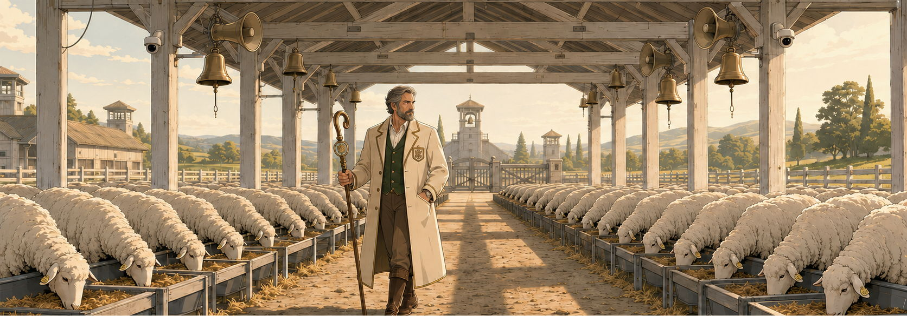

03 / Life in the flock
A perfect day.
Every day.
The bell rings at seven.
Breakfast begins at eight.
By nine, every sheep is exactly where it is supposed to be.
The farm provides food, shelter and protection. Nobody gets lost. Nobody is left behind. Nobody has to worry about making the wrong choice.
The gates simply close once everyone is safely inside.
Comfort is easy when every decision has already been made for you.
Please enjoy your freedom between the fences.